7 Possibly White People Stabbed by Black in Vancouver
March 31st, 2021
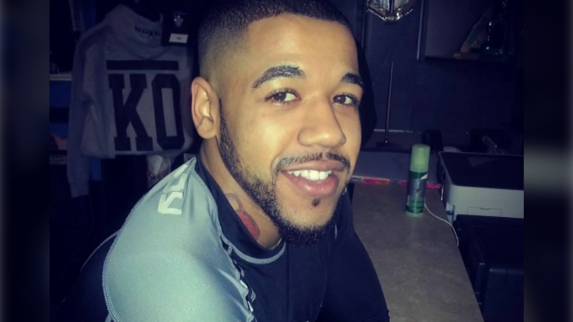Yannick Bandagao, the stabber
It is genuinely amazing how difficult it was for me to find out who the stabber was in this case. I read about 7-8 propaganda pieces from various outlets, the CBC, Vancouver Sun, CTV, and others, before finally getting one that mentioned his name. The long and short of it is this.
On March 28th, in the early afternoon, Yannick Bandagao went on a stabbing spree at the North Vancouver Public Library. He stabbed 7 people, 6 women, and one man. The death was a 27 year old woman that he, although reports are hazy, stabbed multiple times.
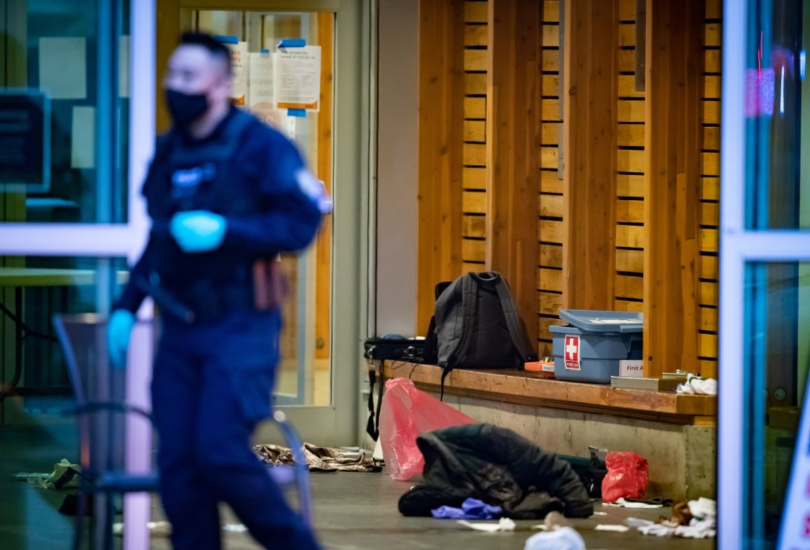No, that's not the victim underneath that blanket, that's just some items.
In the end, he stabbed himself after getting cornered by the RCMP out on the street. I cut a still from the only video I could find, which has been heavily censored by the time I started writing this article, and now. One witness thinks the police might have shot him with rubber bullets, he does certainly go down fast, but that could go either way.
Where this gets more interesting, is the police response. Now, the obvious conclusion here is this, Black criminal, White victims. Either this was one of three things, a racially motivated hate crime against White People, a completely random stabbing by a crazy person, or he went to stab someone specifically, and then kept going. My money would be on those three in order of likelihood, so it was very weird that the RCMP did not release any statement such as "we are investigating this as potentially a racially motivated hate crime against White People."
 In fact, the North Van RCMP did not even have this event on their website at all in the Newsroom section. You can see a much older story from March 9th and then the more recent masonic lodge fires, which I covered here.
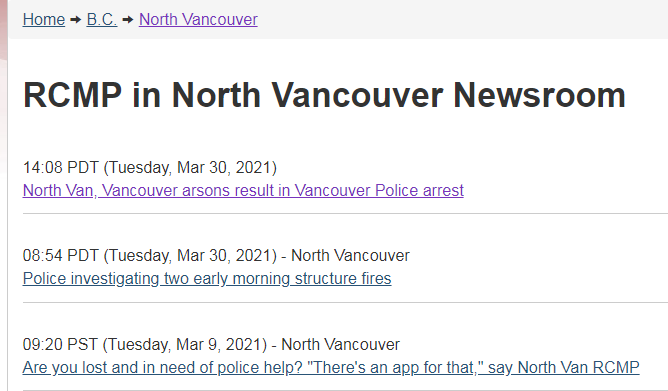
Even weirder, the police were not releasing the names of the victims. This is absolutely not standard police procedure, as you'll see later. I had to find three of the victims scattered through all the articles, all three were White.
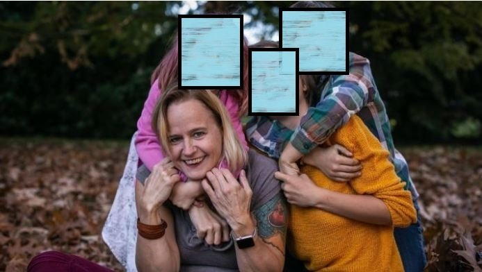
In fact, the North Van RCMP did not even have this event on their website at all in the Newsroom section. You can see a much older story from March 9th and then the more recent masonic lodge fires, which I covered here.
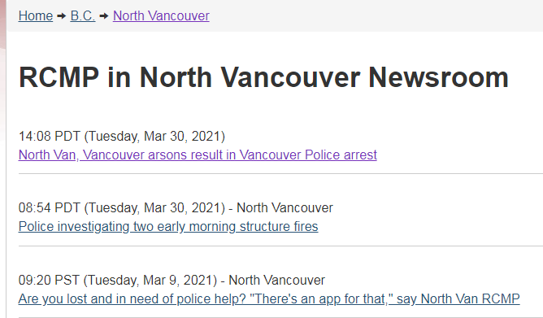
Even weirder, the police were not releasing the names of the victims. This is absolutely not standard police procedure, as you'll see later. I had to find three of the victims scattered through all the articles, all three were White.
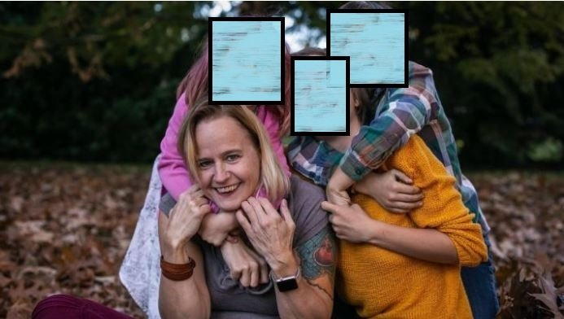Susanne Till
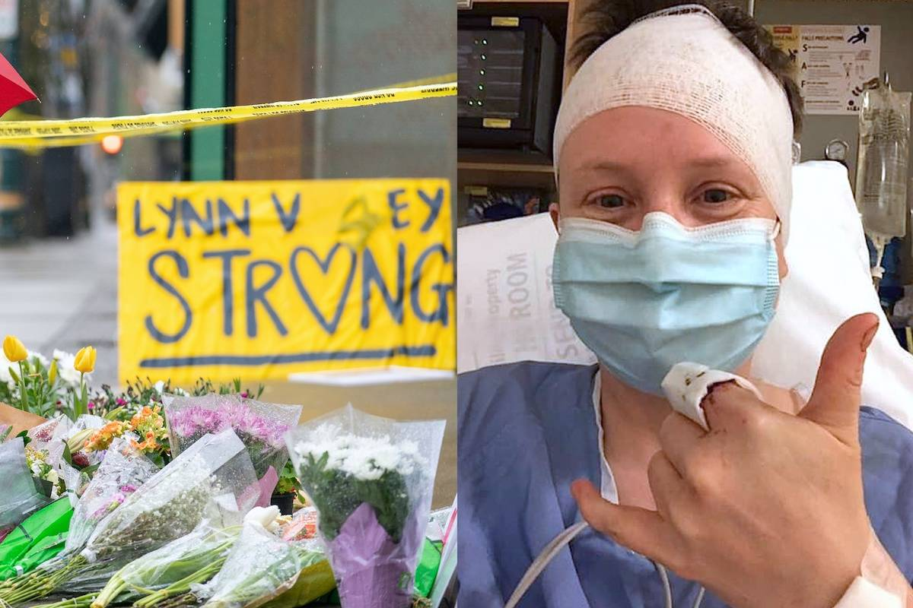Shelah Klausen
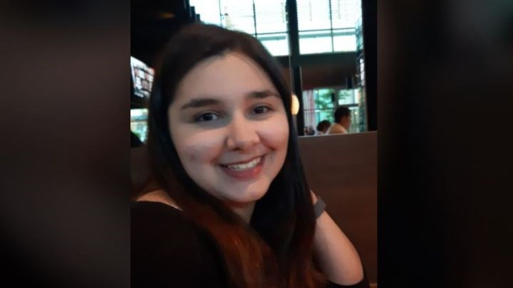Emma Henderson
I can't find information on the other four, because the RCMP, through IHIT, which stands for Integrated Homicide Investigation Team, simply refuses to release that information.
So I decided to give them a little call.
Below are the main takeaways from the video. Unfortunately the video takes a while to load when embedded, but it shouldn't be more than half a minute or so.
TDC_ARTICLE_START
1. In Sgt. Jang's estimation, 95% of the time, victim information, including names, is released.
2. This is extremely important. Many times some members of the public have valuable info that can help the RCMP solve any particular case. Examples are too numerous and obvious, think of your own.
3. Only ~5% of the time, again in Sgt. Jang's estimation, is victim information withheld. Those cases are only when there is no investigatory reason for the public to know. An example he gave was a domestic dispute, where the cops don't need any public help to figure out what's going on.
4. Somehow, someway, the North Van RCMP has decided that they don't need to release the info of the victims, because the public apparently couldn't possibly help with the investigation into this case.
5. This makes absolutely no sense. As I stated myself, it could very well be that some or multiple of the victims did in fact know Yannick Bandagao before hand, or said something to him on Social Media. That it is most likely this is a racially motivated hate crime is irrelevant. Only if it were 100% certain
a random attack would the RCMP not be able to make use of public help.
6. Sgt. Frank Jang himself seems very hesitant to endorse this policy himself.
7. The RCMP absolutely refused to say "we are investigating this as possibly a racially motivated hate crime against White People." Do you think that's political?
7. My new job is getting the information from BC Prosecutorial Services Media Counsel Daniel McLaughlin. Information such as "why is there a publication ban?" and other details.
TDC_ARTICLE_STOP
After this, I called the office of Dan McLaughlin of BC Prosecution Services. I didn't get a response, and found out later that he was not in his office until the 6th of March. So I sent him an email asking for this information.
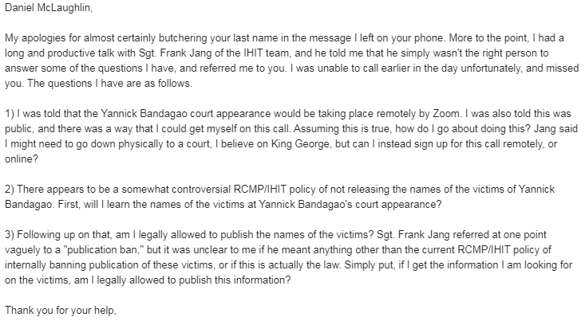
TDC_ARTICLE_START
Daniel McLaughlin,
My apologies for almost certainly butchering your last name in the message I left on your phone. More to the point, I had a long and productive talk with Sgt. Frank Jang of the IHIT team, and he told me that he simply wasn't the right person to answer some of the questions I have, and referred me to you. I was unable to call earlier in the day unfortunately, and missed you. The questions I have are as follows.
1) I was told that the Yannick Bandagao court appearance would be taking place remotely by Zoom. I was also told this was public, and there was a way that I could get myself on this call. Assuming this is true, how do I go about doing this? Jang said I might need to go down physically to a court, I believe on King George, but can I instead sign up for this call remotely, or online?
2) There appears to be a somewhat controversial RCMP/IHIT policy of not releasing the names of the victims of Yannick Bandagao. First, will I learn the names of the victims at Yannick Bandagao's court appearance?
3) Following up on that, am I legally allowed to publish the names of the victims? Sgt. Frank Jang referred at one point vaguely to a "publication ban," but it was unclear to me if he meant anything other than the current RCMP/IHIT policy of internally banning publication of these victims, or if this is actually the law. Simply put, if I get the information I am looking for on the victims, am I legally allowed to publish this information?
Thank you for your help,
TDC_ARTICLE_STOP
After I emailed him, he responded tersely, but helpfully.
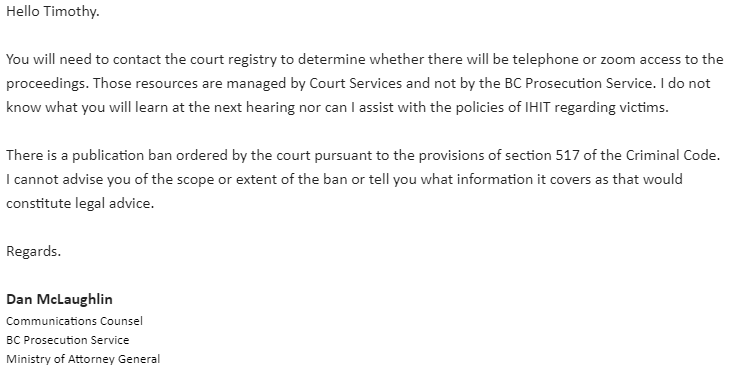
TDC_ARTICLE_START
Hello Timothy.
You will need to contact the court registry to determine whether there will be telephone or zoom access to the proceedings. Those resources are managed by Court Services and not by the BC Prosecution Service. I do not know what you will learn at the next hearing nor can I assist with the policies of IHIT regarding victims.
There is a publication ban ordered by the court pursuant to the provisions of section 517 of the Criminal Code. I cannot advise you of the scope or extent of the ban or tell you what information it covers as that would constitute legal advice.
Regards.
TDC_ARTICLE_STOP
So that's where we're at now. I couldn't contact them because it was too late in the day, but will do tomorrow.
In fact, the North Van RCMP did not even have this event on their website at all in the Newsroom section. You can see a much older story from March 9th and then the more recent masonic lodge fires, which I covered here.
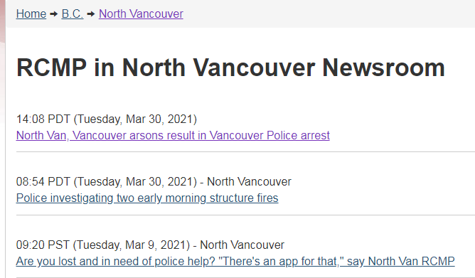
Even weirder, the police were not releasing the names of the victims. This is absolutely not standard police procedure, as you'll see later. I had to find three of the victims scattered through all the articles, all three were White.
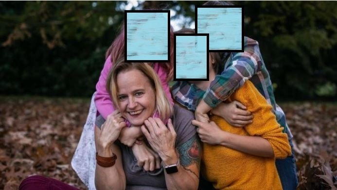